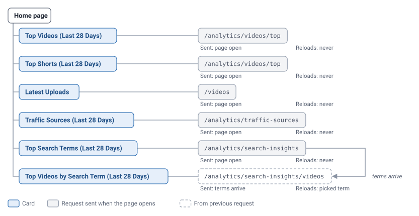
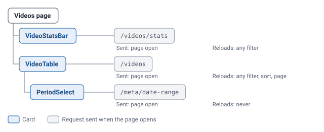
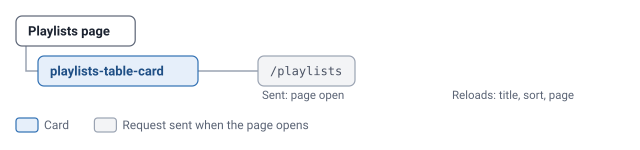
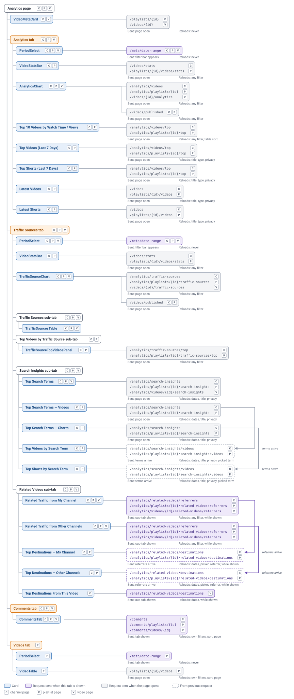
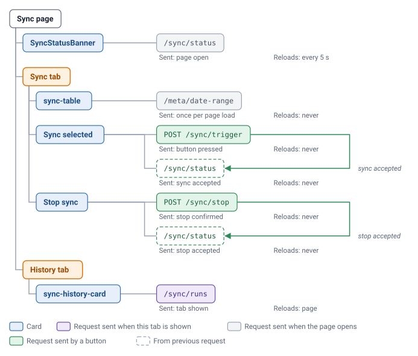
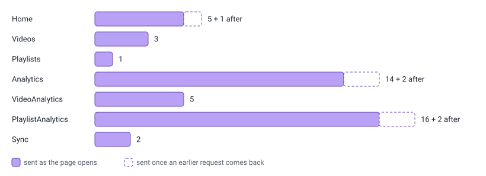

Frontend requests
This page shows every backend request the frontend makes, and when each one is sent.
Home /

- Every card uses the last 28 days and public videos only.
Videos /videos

- Title box waits 300 ms after typing stops.
- Sort and filter changes return the table to page 1.
Playlists /playlists

- Title box waits 300 ms after typing stops.
- Sort and title changes return the table to page 1.
Analytics pages /analytics · /analytics/playlists/:id · /analytics/videos/:id

- Title boxes wait 300 ms after typing stops.
- Moving between Analytics and Traffic Sources sends nothing; arriving from Comments or Videos re-requests the period years.
- A dates, title or privacy change requests the top term's videos twice: old term, then new.
- Type set to Video or Short skips the other type's sidebar cards.
- Revisiting Related Videos sends destinations at once for the old referrer.
- An unknown ID still sends every request; each returns 404.
Sync /sync

- The top navigation also polls sync status, so this page sends two every 5 s.
- History reloads each time its tab is opened.
Requests per page open
How many requests each page sends when it opens on its default tab, not counting the top navigation's status poll.

- Opening channel or playlist Analytics on Related Videos adds 2 referrer requests, then 2 destination requests.
- Type set to Video or Short removes 2 of the 4 sidebar requests.
API wrapper index
Every function in frontend/src/api.ts, the route it calls, and where it is used.
Videos
- Function
- Route
- Used by
getVideos/videos- Home, Videos, Analytics
getVideoStats/videos/stats- Videos, Analytics
getVideosPublished/videos/published- Analytics, PlaylistAnalytics
getVideo/videos/{id}- VideoAnalytics
getVideoAnalytics/videos/{id}/analytics- VideoAnalytics
getVideoTrafficSources/videos/{id}/traffic-sources- VideoAnalytics
Playlists
- Function
- Route
- Used by
getPlaylists/playlists- Playlists
getPlaylist/playlists/{id}- PlaylistAnalytics
getPlaylistVideos/playlists/{id}/videos- PlaylistAnalytics
getPlaylistVideoStats/playlists/{id}/videos/stats- PlaylistAnalytics
Charts and top videos
- Function
- Route
- Used by
getChannelAnalytics/analytics/videos- Analytics
getTopVideosByViews/analytics/videos/top- Home, Analytics
getPlaylistAnalytics/analytics/playlists/{id}- PlaylistAnalytics
getPlaylistTopVideosByViews/analytics/playlists/{id}/top- PlaylistAnalytics
Traffic sources
- Function
- Route
- Used by
getChannelTrafficSources/analytics/traffic-sources- Home, Analytics
getTopVideosByTrafficSource/analytics/traffic-sources/top- Analytics
getPlaylistTrafficSources/analytics/playlists/{id}/traffic-sources- PlaylistAnalytics
getPlaylistTopVideosByTrafficSource/analytics/playlists/{id}/traffic-sources/top- PlaylistAnalytics
Search insights
- Function
- Route
- Used by
getSearchTerms/analytics/search-insights- Home, Analytics
getTopSearchTerms/analytics/search-insights/top- nothing
getVideosBySearchTerm/analytics/search-insights/videos- Home, Analytics
getVideoSearchTerms/analytics/videos/{id}/search-insights- VideoAnalytics
getPlaylistSearchTerms/analytics/playlists/{id}/search-insights- PlaylistAnalytics
getPlaylistTopSearchTerms/analytics/playlists/{id}/search-insights/top- nothing
getPlaylistVideosBySearchTerm/analytics/playlists/{id}/search-insights/videos- PlaylistAnalytics
Related videos
- Function
- Route
- Used by
getRelatedVideoReferrers/analytics/related-videos/referrers- Analytics
getRelatedVideoDestinations/analytics/related-videos/destinations- Analytics, VideoAnalytics
getVideoRelatedVideoReferrers/analytics/videos/{id}/related-videos/referrers- VideoAnalytics
getPlaylistRelatedVideoReferrers/analytics/playlists/{id}/related-videos/referrers- PlaylistAnalytics
getPlaylistRelatedVideoDestinations/analytics/playlists/{id}/related-videos/destinations- PlaylistAnalytics
Comments
- Function
- Route
- Used by
getComments/comments- CommentsTab
getVideoComments/comments/videos/{id}- CommentsTab
getPlaylistComments/comments/playlists/{id}- CommentsTab
Sync and metadata
- Function
- Route
- Used by
getSyncStatus/sync/status- SyncStatus, Sync
triggerSyncPOST /sync/trigger- Sync
stopSyncPOST /sync/stop- Sync
getSyncRuns/sync/runs- Sync
getDateRange/meta/date-range- useAvailableYears (PeriodSelect, Sync)
Requests that may run unnecessarily
Hidden-tab requests
The analytics pages load data for tabs that aren't open; the Comments tab alone still sends 13 analytics requests.
Term videos load twice
A filter change requests the top term's videos with the old term, then again with the new one.
Two status pollers on the Sync page
The top navigation and the Sync page each poll /sync/status, so that page sends two every 5 seconds.
Date range on every appearance
The period dropdown requests /meta/date-range again each time a tab switch shows it.
Unused API functions
getTopSearchTerms and getPlaylistTopSearchTerms have no caller.